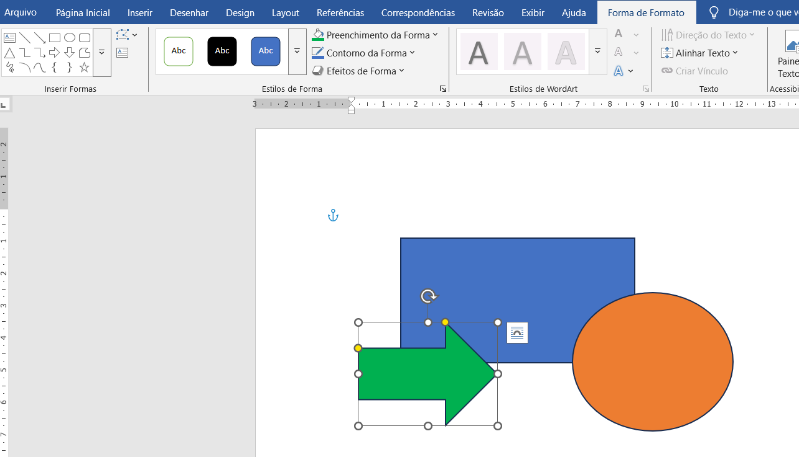
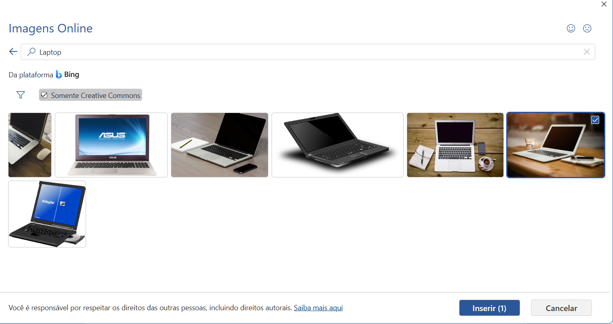
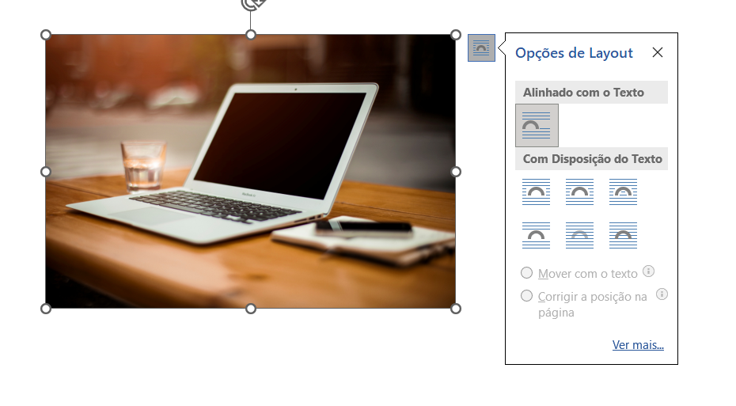

Nesta aula, você vai ver como inserir formas (retângulo, círculo, setas) e imagens no documento para deixar seu texto mais visual.

Vá na aba Inserir e clique em Formas. Escolha uma forma e desenhe arrastando no documento.
Depois, com a forma selecionada, você pode mudar a cor de preenchimento, borda e estilo na aba Forma de Formato que só aparece quando alguma forma estiver selecionada.

Na aba Inserir, clique em Imagens. Você verá duas opções principais:
Ao escolher Imagens da Web, uma janela abre com pesquisa de imagem.
Por padrão, o Word mostra imagens de diferentes fontes. Se você marcar Somente Creative Commons, ele exibe apenas imagens com licença mais flexível para uso pessoal e escolar.
No grupo de resultados de Creative Commons, geralmente aparecem:
Depois de escolher a imagem, clique em Inserir. A imagem aparece no documento e você pode redimensionar arrastando os quadradinhos.
Use Quebra de Texto para escolher se o texto fica em volta da imagem ou acima/abaixo.

Depois de inserir uma forma ou imagem, o Word mostra a aba de formato. Lá você pode escolher opções de layout que valem para ambos:
Essas opções deixam o documento mais bonito e mais fácil de entender, tanto para imagens quanto para formas.